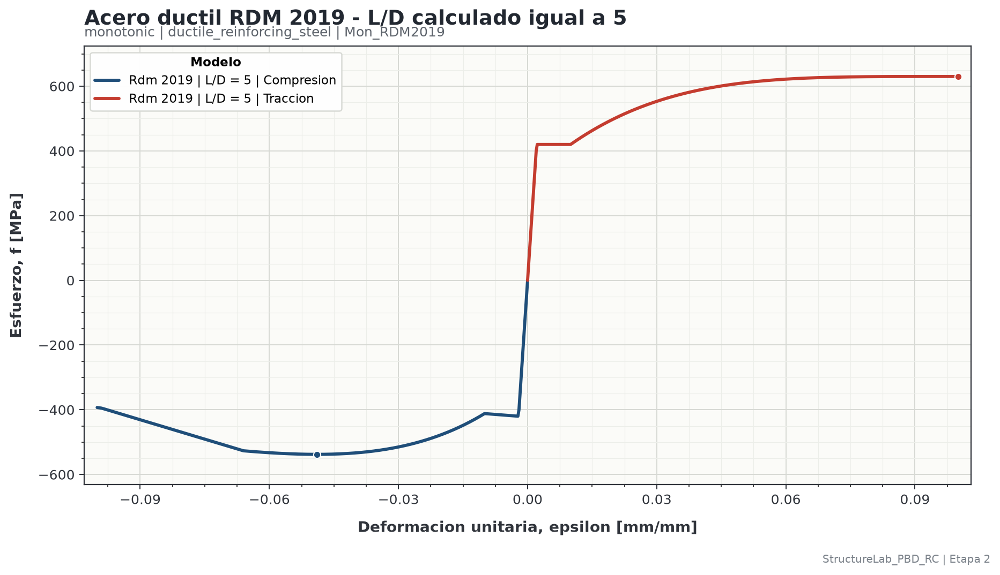

| 1. Alcance, decisiones y fuentes | 3 |
| 2. Convenciones de signos, unidades y ramas | 4 |
| 3. Diccionario de inputs del caso | 5-6 |
| 4. Diccionario de parámetros calculados | 7-8 |
| 5. Geometría y cálculo mecánico de L/D | 9-10 |
| 6. Ejemplo: datos y cálculo completo de L/D | 11-12 |
| 7. Construcción de la envolvente de tracción | 13 |
| 8. Parámetros intermedios RDM | 14 |
| 9. Construcción de la envolvente de compresión | 15 |
| 10. Evaluación numérica y curva obtenida | 16 |
| 11. Configuración JSON, ejecución y outputs | 17-18 |
| 12. Verificación, limitaciones y diagnóstico | 19 |
| 13. Correspondencia con el código y referencias | 20 |
RDM 2019 es una envolvente constitutiva uniaxial monotónica para barras longitudinales de refuerzo. Parte de una curva de tracción y modifica la compresión para representar inicio de pandeo inelástico, degradación pospandeo y una resistencia residual mínima.
Elasticidad, meseta de fluencia y endurecimiento curvo.
La rigidez de estribos determina n, L=n·s y L/D.
Transición, dos pendientes negativas y piso 0.2fy.
| Aplicación | Uso de este modelo | Observación |
|---|---|---|
| Momento-curvatura | Apropiado como envolvente monotónica de fibras de acero. | Coordinar el pandeo con el estado del recubrimiento. |
| Pushover monotónico | Apropiado si la trayectoria avanza sin inversiones relevantes. | La deformación de falla requiere una política adicional. |
| Historia cíclica | No usar como modelo completo. | No incluye Bauschinger, descarga, recarga ni fatiga. |
Las ecuaciones RDM se evalúan internamente con una magnitud positiva e=|εs|. Al exportar la rama física se asigna σs=-fsc(e) para compresión.
| Magnitud | Unidad | Identidad útil |
|---|---|---|
| Longitud | mm | D, dt, s, le, L |
| Esfuerzo y módulo | MPa | 1 MPa = 1 N/mm² |
| Deformación | mm/mm | Adimensional; 1 % = 0.01 |
| Área | mm² | At |
| Inercia | mm⁴ | I de la barra longitudinal |
| Rigidez axial equivalente | N/mm | k y kt |
Cada modelo de Stage 2 se define mediante un JSON. El bloque
inputs identifica de forma inequívoca el proyecto, el caso y
el modelo constitutivo.
| Variable | Unidad | Definición y criterio de obtención |
|---|---|---|
project_id | - | Identificador estable del proyecto. Agrupa casos y evita mezclar resultados de proyectos distintos. |
case_id | - | Identificador del caso de análisis. Una nueva ejecución reemplaza solamente este caso dentro del proyecto. |
model_id | - | Debe ser exactamente Mon_RDM2019. |
label | - | Nombre legible que aparecerá en leyendas, reportes y comparación de casos. |
fy_MPa | MPa | Esfuerzo de fluencia de la barra longitudinal. Preferir valor medio de ensayo compatible con el análisis. |
fu_MPa | MPa | Resistencia máxima de la envolvente de tracción. Debe satisfacer fu ≥ fy. |
Es_MPa | MPa | Módulo elástico de la barra longitudinal. Controla epsilon_y y las pendientes RDM. |
epsilon_sh | mm/mm | Deformación donde termina la meseta de fluencia y comienza el endurecimiento. |
epsilon_su | mm/mm | Deformación última de la envolvente implementada; corresponde al punto fu del modelo. |
parameter_p | - | Exponente de endurecimiento. La Tabla 2 de RDM admite 0, 1 o 4; el ejemplo usa P=4. |
| Variable | Unidad | Definición y criterio de obtención |
|---|---|---|
longitudinal_bar_diameter_mm | mm | Diámetro D de la barra longitudinal cuya estabilidad se evalúa. |
tie_bar_diameter_mm | mm | Diámetro dt de la barra transversal circular. Se usa para calcular At. |
tie_spacing_mm | mm | Separación s entre niveles consecutivos de estribos en la zona evaluada. |
effective_tie_leg_length_mm | mm | Longitud efectiva le de la rama que se alarga en la dirección de pandeo. |
effective_tie_legs | - | Número entero nl de ramas efectivas paralelas a la dirección de restricción. |
restrained_longitudinal_bars | - | Número entero nb de barras atendidas en una cara y en la dirección evaluada. |
tie_steel_modulus_MPa | MPa | Módulo Et del acero transversal empleado en la rigidez axial de las ramas. |
buckling_restraint_case | - | bending para una cara comprimida; pure_compression para ambas caras. |
curve_generation.points | - | Número total de puntos por vector base. Debe ser al menos 2; el ejemplo usa 401. |
curve_generation.max_strain | mm/mm | Máxima deformación; null usa epsilon_su. No puede exceder epsilon_su. |
include_tension | booleano | Activa la rama positiva de tracción en CSV, XLSX y figura. |
include_compression | booleano | Activa la rama negativa de compresión RDM. |
| Símbolo / output | Unidad | Significado |
|---|---|---|
εy / epsilon_y | mm/mm | Deformación de fluencia fy/Es. |
At / tie_area_mm2 | mm² | Área de una barra transversal circular. |
I / longitudinal_bar_inertia_mm4 | mm⁴ | Segundo momento de área de la barra longitudinal. |
| ErI | N·mm² | Rigidez flexional reducida media de la barra en rango inelástico. |
| k | N/mm | Rigidez normalizadora de la barra: π⁴ErI/s³. |
| nbeff | - | Barras efectivas que comparten la rigidez transversal. |
| kt | N/mm | Rigidez de restricción transversal disponible por barra longitudinal. |
| keq | - | Relación real de rigideces kt/k. |
n / buckling_intervals | - | Modo estable: número de espacios de estribo incluidos en L. |
| L | mm | Longitud no soportada: n·s. |
| L/D | - | Relación de longitud no soportada a diámetro longitudinal. |
| s/db | - | Separación de estribos dividida por D; no reemplaza L/D. |
| Símbolo / output | Unidad | Significado |
|---|---|---|
rb / rb | - | Parámetro adimensional de pandeo que combina L/D y fy. |
| rb,min | - | Valor de rb asociado al umbral RDM L/D=5. |
| εi0 | mm/mm | Deformación intermedia preliminar calculada con rb. |
| εi,max | mm/mm | Máxima deformación intermedia asociada a rb,min. |
| εi | mm/mm | Deformación intermedia corregida y limitada a 7εy. |
| fit | MPa | Esfuerzo de la envolvente de tracción evaluado en εi. |
| fst | MPa | Esfuerzo de tracción de referencia evaluado en la deformación actual e. |
| α1 | - | Coeficiente que combina fu/fy con D/L. |
| α2 | - | Coeficiente de degradación que depende de rb. |
| α | - | Factor final para calcular el esfuerzo intermedio. |
| fi | MPa | Esfuerzo intermedio, acotado entre 0.2fy y fit. |
| εii | mm/mm | Segundo cambio de pendiente pospandeo. |
| 0.2fy | MPa | Piso residual que nunca debe ser vulnerado dentro del dominio. |
| Símbolo | Definición |
|---|---|
| εs | Deformación firmada solicitada al material. |
| e | Magnitud positiva |εs| usada en las ecuaciones de compresión. |
| ft(e) | Envolvente de tracción de referencia. |
| fsc(e) | Magnitud positiva de la envolvente RDM en compresión. |
| σs | Esfuerzo firmado final exportado por Stage 2. |
La dirección de pandeo debe definirse antes de contar ramas y barras. El mismo detalle puede producir valores distintos de le, nl y nb en sus dos ejes principales.
Calcular εy, At e I.
Calcular ErI y k=π⁴ErI/s³.
Resolver nb_eff y calcular kt.
Calcular keq=kt/k.
Seleccionar n con la tabla.
L=n·s, L/D=n·s/D y rb.
| n | Intervalo implementado para keq | Interpretación |
|---|---|---|
| 1 | keq > 0.7500 | Un espacio de estribo. |
| 2 | 0.1649 < keq ≤ 0.7500 | Dos espacios. |
| 3 | 0.0976 < keq ≤ 0.1649 | Tres espacios. |
| 4 | 0.0448 < keq ≤ 0.0976 | Cuatro espacios. |
| 5 | 0.0084 < keq ≤ 0.0448 | Cinco espacios. |
| 6 | 0.0063 < keq ≤ 0.0084 | Seis espacios. |
| 7 | 0.0037 < keq ≤ 0.0063 | Siete espacios. |
| 8 | 0.0031 < keq ≤ 0.0037 | Ocho espacios. |
| 9 | 0.0013 < keq ≤ 0.0031 | Nueve espacios. |
| 10 | 0.0009 ≤ keq ≤ 0.0013 | Máximo modo tabulado. |
Se usa el caso canónico incluido en el repositorio. La procedencia está
marcada como source_equation_validation_case: verifica las
ecuaciones, pero debe sustituirse por propiedades reales del proyecto.
| Grupo | Variable | Valor | Interpretación |
|---|---|---|---|
| Acero longitudinal | fy | 420 MPa | Fluencia. |
| fu | 630 MPa | Resistencia máxima. | |
| Es | 200 000 MPa | Módulo elástico. | |
| epsilon_sh | 0.010 | Inicio de endurecimiento. | |
| epsilon_su | 0.100 | Fin del dominio. | |
| P | 4 | Exponente de endurecimiento. | |
| Restricción | D | 20 mm | Barra longitudinal. |
| dt | 10 mm | Barra transversal. | |
| s | 100 mm | Separación de estribos. | |
| le | 200 mm | Longitud efectiva de rama. | |
| nl | 2 | Ramas efectivas. | |
| nb | 2 | Barras restringidas de una cara. | |
| Et | 200 000 MPa | Módulo del estribo. | |
| Caso | bending | Una cara comprimida. |
Como el caso es bending, nbeff=nb=2. Para
pure_compression habría sido nbeff=2nb=4.
La tabla entrega n=1 porque keq>0.7500. En consecuencia:
Defina e como una deformación positiva. La curva de referencia tiene tres tramos dentro del dominio 0≤e≤epsilon_su.
La corrección εi0εu/εi,max solo aplica si εi0<εu<εi,max. Aquí εu=0.100 no es menor que εi,max; por tanto no se aplica.
Como εi>εsh y no aplica el caso especial, α=α1α2=1.2543054.
Para e=|εs|, calcule primero una magnitud positiva fsc(e). Luego asigne signo negativo al exportarla.
Para e=0.020, fst=ft(0.020)=498.898 MPa, q=1-fi/fit=0.1580853 y x=(e-εy)/(εi-εy)=0.2800935.
El punto físico exportado es (εs,σs)=(-0.020,-476.8075 MPa).
| e=|εs| | Tracción +ft [MPa] | Compresión -fsc [MPa] | Rama de compresión |
|---|---|---|---|
| 0.0010 | 200.000 | -200.000 | Elástica |
| 0.0021 | 420.000 | -420.000 | Fluencia |
| 0.0050 | 420.000 | -416.987 | Transición |
| 0.0100 | 420.000 | -411.792 | Transición |
| 0.0200 | 498.898 | -476.807 | Transición |
| 0.0400 | 588.519 | -533.344 | Transición |
| 0.0600 | 621.806 | -532.748 | Transición |
| 0.066007 | 625.726 | -526.808 | Punto (εi,fi) |
| 0.0800 | 629.488 | -470.837 | Pendiente -0.02Es |
| 0.098933 | 630.000 | -395.106 | Punto (εii,0.75fi) |
| 0.1000 | 630.000 | -392.972 | Pendiente -0.01Es |

{
"stage_id": "stage_02",
"enabled": true,
"units": {"length": "mm", "stress": "MPa", "strain": "mm/mm"},
"inputs": {
"project_id": "default",
"case_id": "rdm_2019_ld5",
"model_id": "Mon_RDM2019",
"label": "RDM 2019 | L/D = 5",
"parameters": {
"fy_MPa": 420.0, "fu_MPa": 630.0, "Es_MPa": 200000.0,
"epsilon_sh": 0.01, "epsilon_su": 0.10, "parameter_p": 4.0,
"longitudinal_bar_diameter_mm": 20.0,
"tie_bar_diameter_mm": 10.0, "tie_spacing_mm": 100.0,
"effective_tie_leg_length_mm": 200.0,
"effective_tie_legs": 2, "restrained_longitudinal_bars": 2,
"tie_steel_modulus_MPa": 200000.0,
"buckling_restraint_case": "bending"
},
"curve_generation": {
"points": 401, "max_strain": null,
"include_tension": true, "include_compression": true
},
"provenance": {
"source": "...", "citation": "...",
"source_location": "...", "specimen_or_profile": "...",
"calibration_status": "source_equation_validation_case"
}
}
}
.\.venv_structurelab_pbd_rc\Scripts\Activate.ps1 python scripts\run_stage_02.py
También puede ejecutar directamente el intérprete del entorno: .\.venv_structurelab_pbd_rc\Scripts\python.exe scripts\run_stage_02.py
El caso queda bajo una ruta determinada exclusivamente por project_id, case_id, protocolo, material y model_id.
outputs/stage_02/default/rdm_2019_ld5/
└── monotonic/ductile_reinforcing_steel/
└── Mon_RDM2019/
├── data/
│ ├── resolved_inputs.json
│ ├── calculated_parameters.yaml
│ ├── metrics.yaml
│ ├── curve.csv
│ └── curve.xlsx
├── figures/
│ └── response.png
└── reports/
├── model_report.yaml
└── model_report.pdf
| Archivo | Uso recomendado |
|---|---|
resolved_inputs.json | Auditar exactamente qué leyó el ejecutor. |
calculated_parameters.yaml | Verificar epsilon_y, k, kt, keq, n, L/D y controles RDM. |
metrics.yaml | Revisar rangos, puntos, ramas y estados fuera del dominio. |
curve.csv/.xlsx | Importar la curva a otras herramientas o revisarla numéricamente. |
response.png | Inspección visual de signos, ramas y deformación máxima. |
model_report.yaml | Registro integral de inputs, cálculos, advertencias y archivos. |
| Síntoma | Causa probable | Acción |
|---|---|---|
| L/D inesperadamente grande | nb, nl o le se contaron en otra dirección. | Redibujar el mecanismo y revisar la cara evaluada. |
| keq disminuye al reforzar estribos | Se invirtió la razón. | Usar keq=kt/k. |
| Error por keq<0.0009 | Restricción fuera de la tabla n≤10. | No extrapolar; revisar detalle o método. |
| Salto en epsilon_i | fit o la condición especial están mal evaluados. | Revisar P=1 solo en el caso especial. |
| Compresión positiva en CSV | Se usó la API de magnitudes, no la respuesta firmada. | Usar el ejecutor Stage 2 o signed_compression_response. |
| Curva después de epsilon_su | Se prolongó el modelo fuera de dominio. | Terminar la exportación en epsilon_su. |
| Responsabilidad | Ubicación |
|---|---|
| Inputs, validación y ecuaciones RDM | src/structurelab_pbd_rc/mechanics/materials/ductile_reinforcing_steel/monotonic/rdm_2019/model.py |
| k, kt, keq, tabla n y L/D | src/structurelab_pbd_rc/mechanics/materials/ductile_reinforcing_steel/monotonic/rdm_2019/buckling_length.py |
| JSON canónico | configs/stage_02/ductile_reinforcing_steel/monotonic/Mon_RDM2019.json |
| Pruebas de ecuaciones RDM | tests/test_material_models/test_rdm_2019.py |
| Ejemplos B3 y ASCE de L/D | tests/test_material_models/test_rdm_buckling_length.py |
.\.venv_structurelab_pbd_rc\Scripts\python.exe -m pytest ` tests\test_material_models\test_rdm_2019.py ` tests\test_material_models\test_rdm_buckling_length.py ` tests\test_stages\test_stage_02.py -q